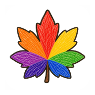

宝箱で道具が増えていく、ブラウザで開くだけのペイント。
小学校低〜中学年が、説明ゼロで 1 枚描き切れることだけに全振りしたペイントソフトです。 ブラウザで開けばすぐ描けます。インストールもアカウントも要りません。
名前の「いろは」は、ものごとのいろは（＝入門）と 色 の掛詞です。 アイコンはいろはモミジ（7 裂＝いろはにほへと）を虹の 7 色で塗ったもの。
描いた絵はすべてその端末の中に保存されます。どこかへ送られることはありません。
| 描く | ペン先 5 種（クレヨン / 色えんぴつ / Ｇペン / 筆 / 油絵）× 太さ 5 段階、12 色、消しゴム、バケツ塗り、スポイト |
|---|---|
| 紙をえらぶ | ふつう / わら半紙 / キャンバス。紙の質感は絵の一部なので、書き出す PNG にも入ります |
| 下敷き | 方眼、ビーズ（マス目にしか置けないドット絵モード）、そして写真。目安なので絵には残りません |
| 写真をなぞる | 手元の画像を取り込んで下敷きにできます。指で位置と大きさを決め、濃さは 3 段階。見比べたいときは 1 タップで隠せます |
| 直す | 戻る・進む。作品ごとの履歴が残るので、上書きしてしまっても後から戻せます |
| ためる | 「作品」に一覧。捨てても本当には消えず、いつでも取り戻せます |
| 出す | 「完成！」で PNG に書き出し |
| みんなで | 1 台の画面に複数人で同時に描けるモード |
| 目にやさしく | 画面の明るさを 4 段階で落とせます。絵の色は変わりません |
プロトタイプなので、正直に書いておきます。
ソースは MIT ライセンスで公開しています。企画段階では GPL 系も検討しましたが、 学校・先生・他の開発者がためらわずに使えることを優先しました。
TypeScript + Vite。ライブラリを持たない素の Canvas 実装です。サーバーはありません。